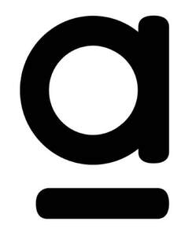

Trade Mark Journal No.2025/042 17 October 2025
UK00004275165 8 October 2025 (3,21,35,39,41,42,44)

International priority date claimed: 8 April 2025
(Germany)
(302025003494)
- Class 3
- Deodorizers for personal use, especially deodorants for personal care; body deodorants [perfumery]; Roll-on deodorants [personal care products]; perfumery products and fragrances; perfume, especially eau de parfum, eau de toilette, aftershaves; perfumery oils; perfume oils; perfume oils for the production of cosmetic preparations; essential oils; natural oils for perfumes; synthetic perfumery; natural perfumery; perfume extracts; aromatic extracts; flavorings for perfumes; solid perfumes; liquid perfumes; flower extracts [perfumery]; extracts from flowers [perfumery]; body cleansing and personal care preparations; Personal care products; toilet products [personal hygiene]; Perfumed toilet water; personal and beauty care products, in particular perfumed soaps, perfumed soaps, personal care soaps, soap substitutes, face masks [body care products], face packs [personal care products], hair cleansing, care and beautification; hair conditioners, cosmetic hair care products, shampoos, gels, foams and balms, as well as aerosol products for styling and hair care, hair lacquers, hair dyes and decolorizers; undulating and perm preparations; lotions for hair care; Bath oils for hair care; personal care products and cosmetics, especially creams, milks, lotions, gels and powders for the face, body and hands; perfumed lotions [toilet preparations], skin oils, perfumed creams; milk, gels and oils for tanning and applying after sunbathing; shower and bath gel; foaming bath gels for body care; cosmetic foam and shower baths; bath additives; perfumed body sprays; cosmetic products in the field of decorative cosmetics, in particular lipsticks, eye shadows, make-up, mascara, nail polish, eyeliner; perfumed cloths; perfumed powder; perfumed talcum powder; pillows filled with perfumed substances; perfumed sachets; fragrance sprays; perfumed sachets; Foundations for the skin; Foundations [make-up]; primers for make-up; primers for make-up purposes; Makeup; Makeup powder; Facial makeup; Foundations [Makeup]; liquid makeup primer; make-up base in the form of pastes; make-up for the face; Makeup for the skin; Liquid makeup; Makeup for the eyes; make-up for optical eyelid enlargement; make-up removal milk; creams for make-up removal; gels for removing makeup; make-up products; body and beauty care products in the form of blush; Rouge; blush for cosmetic purposes; Cheek red [blush]; blush for the face; liquid blush; blush sticks; body and beauty care products in the form of eye shadow; Eye Shadow [Cosmetics]; Eye make-up [eye shadow]; Mascara; mascara; Eyeliner; Eyeliner [cosmetics]; Eyeliner pencils; liquid eyeliner; cosmetic products for application to the lips; Lip gloss; Lip balm, not for medicinal use; lip creams; cosmetic lip protectors; conditioner for the lips; lip pomades for cosmetic purposes; Sunscreen for the lips [cosmetics]; Lipsticks; contour pencils for the lips; pencils for tracing the lip contours; lip primer; lipstick cases; primers for fingernails and toenails [cosmetics]; nail gel; Nail polish; nail hardener; Nail creams; nail tips; cuticle oils; Nail Glitter; Nail lightener; NJellyskin creams; nail conditioner; nail care products; nail polish; nail polishing pins; cosmetic preparations for drying nails; removal preparations for nail polish; remover for nail polish; means for nail repair; adhesives for fastening artificial nails; adhesives for artificial eyelashes, hairpieces and nails; all the aforementioned goods for cosmetic purposes only and excluding oral and dental care products; cases filled with cosmetics; all the above goods not intended for distribution in pharmacies .
- Class 21
- Powder puffs; cosmetic sponges; Cosmetic brushes; Makeup Brushes; facial sponges for applying makeup; application sticks for applying makeup; applicators for eye make-up; Mascara brush; Stencils for use when applying makeup; apparatus, non-electric, for the removal of make-up; Lip brushes; combs and brushes [other than brushes]; nail brushes; perfume bottles; perfume atomizer; perfume atomizer [empty]; perfume atomizers [without contents]; Atomizer for perfume.
- Class 35
- Advertising; advertising, marketing and promotion; Management; company management; office work; information on commercial matters relating to perfume; Presentation of goods and services in retail stores and online shops; Mediation and conclusion of contracts for the purchase and sale of goods and for the use of services [for third parties]. provided in retail stores and via the Internet; Order acceptance, delivery order service and invoice processing via the Internet; exhibition and demonstration of goods; assembling goods for third parties for presentation purposes; Presentation of goods to third parties for sales purposes; import and export services; Order services; procurement services for third parties and retail services, in particular via the internet, with the following goods: deodorisers for personal use, in particular deodorants for personal care, body deodorants [perfumery products], roll-on deodorants [personal care products], perfumery products and fragrances, perfume, in particular eau de parfum, eau de toilette, afterwashes, perfumery oils, perfume oils, perfume oils for the manufacture of cosmetic preparations, essential oils, natural oils for perfumes, synthetic perfumery, natural perfumery, perfume extracts, aromatic extracts, perfume flavourings, solid perfumes, liquid perfumes, flower extracts, flower extracts, body cleansing and personal care products, personal care products, toilet products, perfumed toilet water, body and beauty care products, in particular perfumed soaps, soaps for the body, soap substitutes, face masks [body care products], face packs [body care products], hair cleansing, care and beautification products, hair care conditioners, cosmetic hair care products, shampoos, gels, foams and balms as well as aerosol products for styling and hair care, hair lacquers, hair dyeing and discoloring agents, undulating and perming preparations, lotions for hair care, bath oils for hair care, body care products and cosmetics, in particular Creams, milks, lotions, gels and powders for face, body and hands, perfumed lotions [toilet preparations], skin oils, perfumed creams, milk, gels and oils for skin tanning and for application after sunbathing, shower and bath gels, foaming bath gels for body care, cosmetic foam and shower baths, bath additives, perfumed body sprays, cosmetic products in the field of decorative cosmetics, especially lipsticks, eye shadows, make-up, mascara, nail polish, eyeliner, perfumed wipes, perfumed powder, perfumed talcum powder, pillows filled with perfumed substances, perfumed sachets, fragrance sprays, perfumed sachets, primers for Primers for the skin, Foundations for make-up, Foundations for make-up, Make-up, Make-up powders, Facial make-up, Primers [Make-up], Liquid make-up primer, Make-up base in the form of pastes, Make-up for the face, Make-up for the skin, Liquid make-up, Make-up for the eyes, Make-up for optical eyelid augmentation, Make-up removal milk, Creams for make-up removal, Gels for removing make-up, Make-up products, Preparations for body and body Beauty care in the form of blush, blush, blush for cosmetic purposes, cheek red [blush], blush for the face, liquid blush, blush sticks, body and beauty care products in the form of eye shadow, eye shadow [cosmetics], eye make-up [eye shadow], mascara, mascara [mascara], eyeliner, eyeliner [cosmetics], eyeliner sticks, liquid eyeliners, cosmetic products for application to the lips, lip gloss, lip balm, not for medical use, Lip Creams, Cosmetic Lip Protectors, Lip Conditioners, Lip Pomades for Cosmetic Use, Sunscreens for Lips [Cosmetics], Lipsticks, Lip Contour Pencils, Lip Contour Pencils, Lip Primers, Lipstick Cases, Fingernail and Toenail Foundations [Cosmetics], Nail Gel, Nail Polish, Nail Hardener, Nail Creams, Nail Tips, Cuticle Oils, Nail Glitter, Nail Lighteners, Cuticle Creams, Nail Conditioners, Nail care products, nail polishing products, nail polishing sticks, cosmetic preparations for drying nails, nail polish removal products, nail polish removal products, nail repair products, adhesives for fastening artificial nails, adhesives for artificial eyelashes, hairpieces and nails, all of the above products for cosmetic purposes only and excluding oral and dental care products, cases filled with cosmetics, all of the above goods not for distribution in pharmacies Powder puffs, cosmetic sponges, cosmetic brushes, make-up brushes, facial sponges for applying make-up, application sticks for applying make-up, applicators for eye make-up mascara brush, stencils for use in applying make-up, apparatus, non-electric, for removing make-up, lip brushes, combs and brushes [other than brushes], nail brushes, perfume bottles, perfume atomizers, perfume atomizers [empty], perfume atomizers [without contents], Perfume atomizer .
- Class 39
- Transportation; packaging and storage of goods; services related to the transport of deodorizers for personal use; services related to the transport of preparations for health care; services related to the transport of personal and beauty care products; services related to packing goods before shipment; Delivery of products for body and beautycare; delivery of preparations for health care; storage of personal and beauty care products, especially cosmetics; Advice and information in relation to the aforementioned services, to the extent included in this class .
- Class 41
- Publications of printed products on personal and beauty products; publications of printed products on the subject of cosmetics; publications of printed products on the subject of deodorizers and perfumery products; organisation and implementation of lectures, seminars and workshops [training], in particular on personal and beauty care products, cosmetics, perfumery products and deodorising agents; Organisation and implementation of lectures, seminars and workshops [Training], in particular on ingredients and processing of personal and beauty care products, cosmetics, perfumery products and deodorisers.
- Class 42
- Provision of technical, technological and scientific information relating to the production of personal and beauty care products; providing technical, technological and scientific information relating to the production of cosmetics; Provision of technical, technological and scientific information relating to the manufacture of deodorisers and perfumery products.
- Class 44
- Consultancy services in the field of make-up; makeup consultation services, delivered online or in person; Makeup consulting services and makeup application; Online makeup consultation; cosmetic make-up treatments.
Parfümerie AKZENTE GmbH
Representative: Morrison & Foerster (UK) LLP